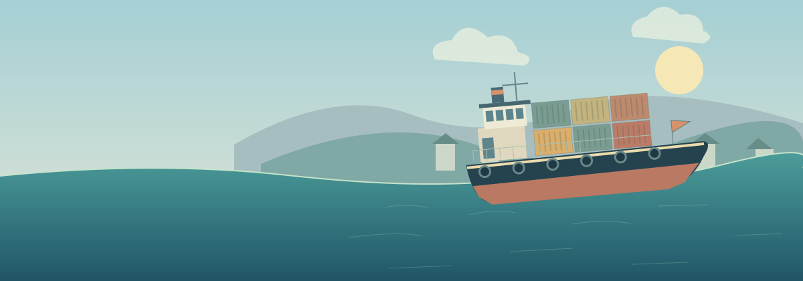
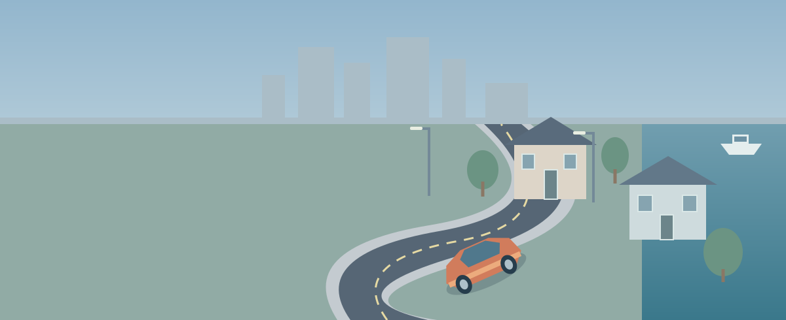

OPEN ROADS. OPEN WATER. GREAT LITTLE GAMES.
Go nowhere.
Have a great time.
A little escape for your everyday. Original games for land and sea,
made for one more journey and the long way home.
NO ACCOUNTS. NO ADS.
A LITTLE ADVENTURE.
A LITTLE ADVENTURE.

NEW IN THE GARAGE 03CARGO RUNS / COASTAL CRUISES
Tideline.
Your ship. Your responsibility.
Pirates, passengers, and a sea with other plans.

THE NEIGHBORHOOD FAVORITE ✳
FIGURE-EIGHT / CITY STREETS / BOAT PORTSunday
Slide.
Suburban sweepers. City corners. Harbor runs.
Five tracks. Ten rides. A look of your own.
BRING YOUR PEOPLE / 04Rooftop
Rooftop
Rumble.
Four floppy friends. One very loose ball.
Chaotic basketball for 2 or 4 local players.
Daily tasks. Earn points. Open each game’s GARAGE to unlock your next ride.
THE GARAGE NOTICEBOARD
Got a good word?
Or a wild idea?
Leave a review, report a bug, or suggest what comes next. No sign-in. Usernames are public nicknames and are not verified. Please avoid personal information.